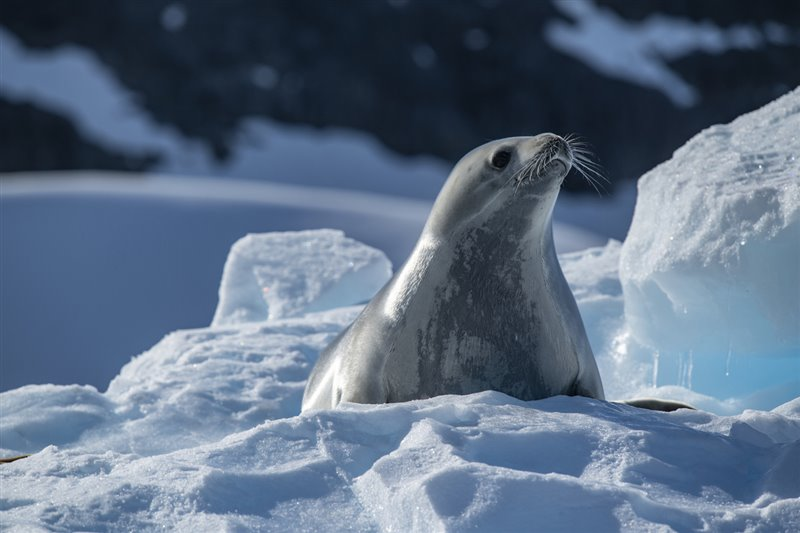
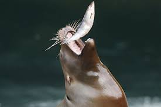
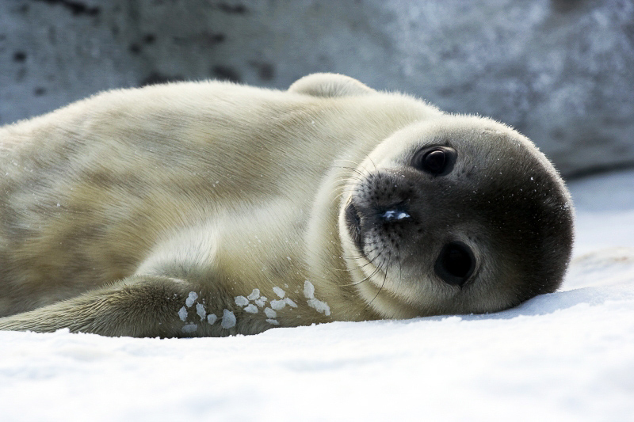

Hábitat y ubicación geográfica
Las focas habitan en casi todos los océanos del mundo, a excepción del Océano Índico. Muchas de las especies viven y se reproducen en zonas de hielo oceánico y otras lo hacen en tierra, mientras que algunas pueden hacerlo en ambos ambientes.
Alimentación
La alimentación de las focas es realmente variada, según las especies y la zona del globo en que habiten, pero, por lo general, son animales carnívoros que se alimentan de muchos tipos de peces. Entre ellos pueden destacarse la caballa, el lenguado o los arenques. Además, atrapan a estos animales con sus dientes de gran tamaño y los consumen enteros.
Reproducción
En lo referente a la reproducción de las focas cabe reseñar como el período de cría comienza con los machos llamando la atención de las hembras mientras se dan vueltas entre ellos y desprenden hormonas que atraen a las hembras. Las hembras desarrollan un huevo que estará protegido en el útero y producen más hormonas, lo que hace que se sientan atraídas por los machos. Finalmente los dominantes serán los que tendrán el derecho de aparearse. Los machos pueden llegar incluso a quedarse sin comer para que otro macho no se aparee con la hembra que está en su territorio. Además, los machos se aparearán con todas las hembras que puedan.
Estado de conservación
Las focas por todas las amenazas que tienen en su entorno natural, pero también por la acción de los seres humanos, se encuentran en la mayoría de sus especies en peligro de extinción. Todo esto tiene una lectura muy importante y alarmante, puesto que si las focas terminasen por extinguir, detrás de estas podrían caer otras especies de animales que se alimentan de ellas, por lo que es esencial que todas las colonias de focas consigan fortalecerse y aumentar en número, aunque cada vez se teme más por estos seres que ven como el calentamiento global va eliminando su hábitat, al igual que la caza furtiva de las crías para conseguir pieles, hacen que su extinción esté cada vez más cerca.
| Nombre científico | Phocidae |
| Tamaño | 160cm-180cm |
| Clase | Mammalia |
| Orden | Carnivora |
| Peso | 80-130 kg |
| Longevidad | 10-30 años |
| Alimentación | Carnivora |
| Reproducción | Vivípara |
| Periodo de gestación | 335 días |